Untuk Admin · Reseller · Agent · Client
Web Builder adalah platform SaaS untuk UMKM membuat toko online sendiri di
domain .id tanpa perlu coding. Fitur utama:
Toko online siap pakai — template toko + blok UMKM (etalase produk, promo & voucher, ulasan, info toko) dengan tombol pesan via WhatsApp
Editor drag-and-drop — susun halaman dari block siap pakai (hero, feature grid, produk, blog, form kontak, dsb.)
.id, .co.id, .com, dsb. langsung dari wizardAda 4 peran user dengan akses berbeda:
Pengguna akhir — orang yang punya toko/bisnis dan mau bikin situs sendiri.
Yang bisa dilakukan: - Beli domain + bikin situs dari template - Edit block, tema, konten via editor visual - Kelola produk, blog, formulir kontak - Setup DNS + WHOIS domain sendiri - Perpanjang domain
Pekerja lapangan yang dibawahi oleh Reseller. Membantu klien setup situs.
Yang bisa dilakukan: - Lihat klien yang di-assign - Beli domain untuk klien (on-behalf-of — pakai wallet Reseller induk) - Edit situs klien (jadi collaborator otomatis) - Lihat statistik pribadi
Partner yang jualan produk Web Builder ke pelanggan mereka sendiri, dengan harga jual sendiri.
Yang bisa dilakukan: - Undang Agent ke tim - Buat & manage klien - Set harga jual per TLD (untuk agent + untuk client) - Top-up wallet + lihat ledger transaksi - Beli domain on-behalf-of klien - Lihat statistik tim (all agents + revenue)
Pengelola platform. Punya akses full ke semua data + config.
Yang bisa dilakukan: - CRUD user, situs, template, zone TLD - Approve reseller applications - Set harga platform (retail + wholesale) - Verify top-up wallet + mark invoice paid manual - Manage Cloudflare configs, promo, payment methods - Observability: audit log, email log, metrics
| Istilah | Arti |
|---|---|
| Situs / Site | Website milik user, punya domain sendiri + template + isi (halaman, produk, blog) |
| Domain | Alamat internet (mis. tokosaya.id) yang mengarah ke situs |
| Zone / TLD | Ekstensi domain (.id, .co.id, .com) yang di-support platform |
| Template | Blueprint desain siap pakai — kategori (UMKM, sekolah, portfolio, dsb.) × variant (modern, clean, professional) |
| Block | Komponen halaman (Hero, Feature Grid, Button, Text, Image, Product Grid, dsb.) |
| Theme | Setting global site: warna primary/secondary/bg/fg + font heading/body + radius sudut |
| Wallet | Saldo internal — dipakai Reseller/Agent untuk bayar domain instan (tanpa gateway) |
| Invoice | Tagihan atas transaksi (register domain, renew, top-up wallet) |
| On-behalf-of (OBO) | Reseller/Agent trigger transaksi untuk klien — domain jadi milik klien, tapi dibayar reseller |
| Assignment | Relasi Reseller ↔ Client atau Agent ↔ Client — kontrol siapa yang boleh manage siapa |
Berlaku untuk semua role (client self-service, atau reseller/agent OBO):
1. Cari domain di wizard "Beli Domain + Buat Situs"
└─► Cek availability + harga per TLD (retail/wholesale sesuai role)
2. Konfirmasi: pilih tahun registrasi, metode bayar, promo (opsional)
└─► Sistem buat invoice → charge via payment gateway atau wallet
3. Setelah bayar (webhook / wallet debit sync):
├─► Sistem daftarkan domain ke registrar (via EPP direct)
├─► Auto-attach ke Cloudflare (create zone + DNS records)
└─► Push nameserver Cloudflare ke registry
4. Pilih template → sistem create Situs baru attached ke domain
5. Buka editor → edit konten → Publikasikan → domain live
Total waktu dari klik "Beli" sampai domain aktif: 1-5 menit (tergantung antrian registrar).
Semua role login lewat URL yang sama, di-routing otomatis ke dashboard yang tepat berdasarkan role akun.
https://umkm.pandi.id/login/admin/reseller/dashboard/agent/dashboard/dashboardKalau ada masalah teknis yang tidak bisa diselesaikan sendiri, hubungi:
/admin/settings)Panduan ini terdiri dari 5 bab per role/fitur — baca bab yang sesuai dengan peran Anda:
Panduan ini di-generate dari Web Builder v1 — kalau ada fitur baru yang tidak tercantum, cek changelog atau hubungi admin.
Untuk pemilik usaha (UMKM) yang mau punya toko online sendiri di domain .id.
Semua flow di sini bisa dilakukan sendiri tanpa bantuan Agent/Reseller.
┌──────────────┐ ┌───────────────┐ ┌───────────────┐
│ Registrasi │───►│ Beli Domain │───►│ Pilih Template│
│ + Verify │ │ + Bayar │ │ + Bikin Situs │
│ Email │ │ │ │ │
└──────────────┘ └───────────────┘ └───────┬───────┘
│
▼
┌──────────────┐ ┌───────────────┐ ┌───────────────┐
│ Situs Live │◄───│ Publikasikan │◄───│ Edit Block │
│ di domain │ │ Situs │ │ di Editor │
└──────────────┘ └───────────────┘ └───────────────┘
https://umkm.pandi.id/registerKalau tidak menerima email dalam 5 menit: - Cek folder Spam - Klik "Kirim ulang" di halaman login - Kalau tetap tidak masuk, hubungi support
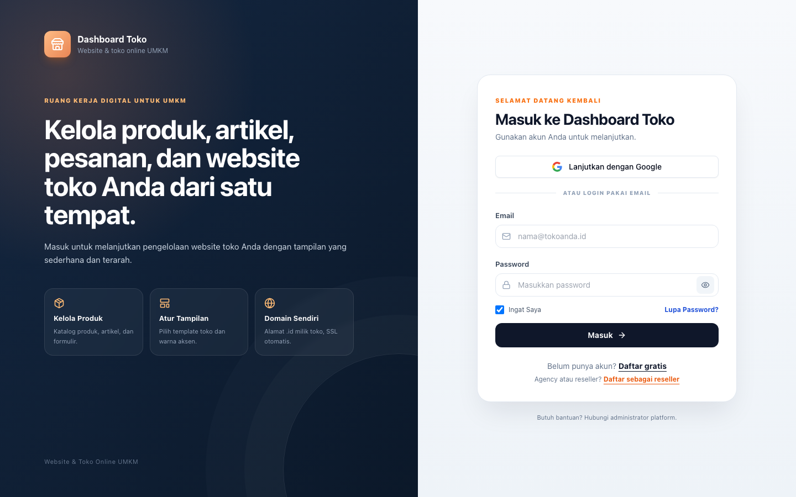
https://umkm.pandi.id/loginWajib diisi sebelum beli domain, karena data ini dipakai untuk WHOIS contact:
+6281234567890.id karena regulasi PANDI)Kalau salah satu field kosong, wizard beli domain akan tampilkan peringatan "Profil belum lengkap, kurang: nama, phone, ...".
Flow ini gabungkan "daftar domain" + "buat situs" dalam satu wizard.
myshop → sistem tampilkan hasil per TLD (myshop.id, myshop.co.id, myshop.com, dsb.)myshop.co.id → cek 1 domain spesifikSetiap domain tersedia menampilkan harga (register + renew) sesuai role Anda. Untuk client, ini adalah harga retail.
Setelah pilih domain:
.id) — KTP atau NPWP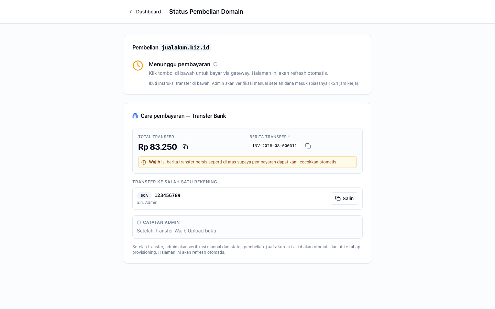
Berdasarkan metode:
Gateway (Midtrans/Paylabs):
- Redirect ke halaman gateway → bayar via VA/kartu/e-wallet
- Setelah bayar, halaman kembali ke /sites/pending/<jobId> otomatis
Manual Bank:
- Halaman /sites/pending/<jobId> menampilkan instruksi:
- Total transfer
- Berita transfer (nomor invoice — WAJIB dicantumkan di transfer)
- Daftar rekening tujuan
- Transfer sesuai instruksi
- Tunggu admin verify (~1×24 jam kerja)
Halaman /sites/pending/<jobId> auto-refresh 3-5 detik.
Status yang mungkin muncul: - Menunggu pembayaran — belum bayar - Sedang diproses registrar — payment OK, EPP register sedang jalan (~1-5 menit) - Domain aktif — sukses, siap pilih template - Gagal — cek pesan detail, tombol Coba Lagi tersedia (tidak charge ulang)
Setelah status aktif:
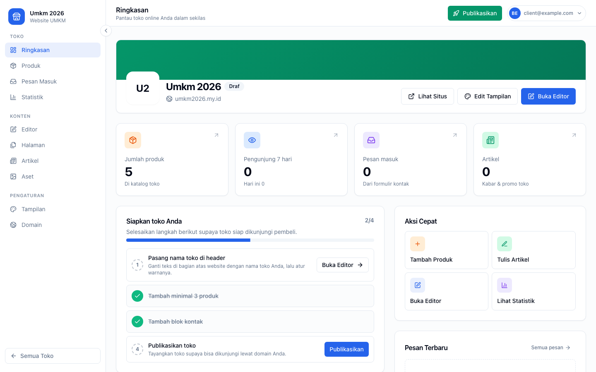
Setiap situs punya dashboard sendiri dengan menu di sidebar:
| Grup | Menu | Fungsi |
|---|---|---|
| Toko | Ringkasan | Statistik singkat + checklist persiapan toko |
| Toko | Produk | Kelola katalog produk (§1.7) |
| Toko | Pesan Masuk | Kiriman formulir dari pengunjung (§1.9) |
| Toko | Statistik | Jumlah pengunjung per hari |
| Konten | Editor | Susun blok halaman (§1.4) |
| Konten | Halaman | Daftar halaman situs (§1.5) |
| Konten | Artikel | Blog toko — kabar, promo, tips (§1.8) |
| Konten | Aset | Gambar & berkas (§1.10) |
| Pengaturan | Tampilan | Warna, font, ganti template (§1.6) |
| Pengaturan | Domain | Kelola domain (§1.13) |
Halaman Ringkasan menampilkan jumlah produk, pengunjung 7 hari terakhir, pesan masuk, dan artikel, plus checklist persiapan toko:
Setiap item checklist bisa diklik untuk langsung ke halaman terkait.
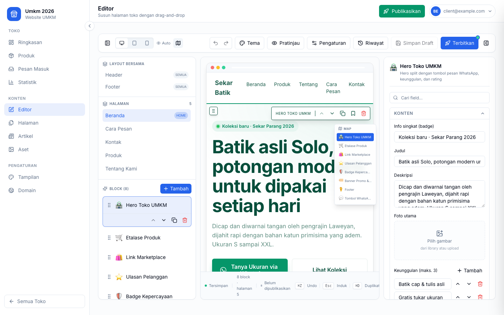
Tampilan editor terbagi 3 kolom (desktop):
┌─────────────┬─────────────────────────┬─────────────┐
│ Sidebar │ Canvas (preview live) │ Panel │
│ block tree │ │ properties │
│ │ │ + layout │
│ ───────── │ │ ───────── │
│ [ Hero ] │ < Live Preview > │ Content │
│ [ Feat ] │ │ Layout │
│ [ CTA ] │ │ Style │
│ [ Blog ] │ │ │
└─────────────┴─────────────────────────┴─────────────┘
Left panel Center canvas Right panel
(drag reorder) (klik block select) (edit props)
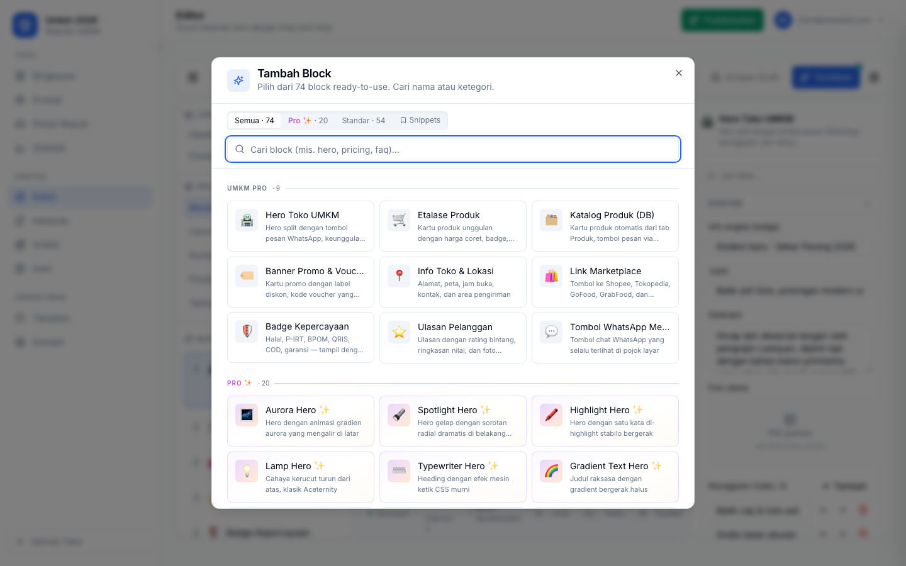
Blok siap pakai untuk toko online. Semua otomatis mengikuti warna & font tema.
| Blok | Kegunaan |
|---|---|
| Hero Toko UMKM | Bagian pembuka: judul, jam buka, tombol "Pesan via WhatsApp", foto produk, rating |
| Etalase Produk | Produk unggulan dengan harga coret + diskon otomatis, badge Terlaris/Baru/Promo, tombol pesan per produk |
| Katalog Produk (DB) | Sama seperti Etalase, tapi produk diambil otomatis dari menu Produk |
| Banner Promo & Voucher | Promo dengan kode voucher (pengunjung bisa salin kode) + masa berlaku |
| Info Toko & Lokasi | Alamat, jam buka per hari, kontak, area antar, peta Google Maps |
| Link Marketplace | Tombol ke toko Anda di Shopee, Tokopedia, TikTok Shop, GoFood, dsb. |
| Badge Kepercayaan | Halal, PIRT, BPOM, QRIS, COD, garansi, dsb. |
| Ulasan Pelanggan | Ulasan dengan bintang 1–5 + rata-rata rating |
| Tombol WhatsApp Melayang | Tombol WhatsApp yang selalu terlihat di pojok layar |
Nomor WhatsApp: isi dengan format biasa (mis. 0812-3456-7890) — sistem
otomatis mengubahnya ke format wa.me internasional. Template memakai nomor
contoh 081234567890, ganti dengan nomor toko Anda sebelum publish.
Situs bisa punya multiple halaman (Home, About, Kontak, dsb.).
Menu tab Halaman di header editor:
_home, akses via https://domain.com/https://domain.com/<slug>Setiap edit page dicatat sebagai version. Bisa restore ke version lama:
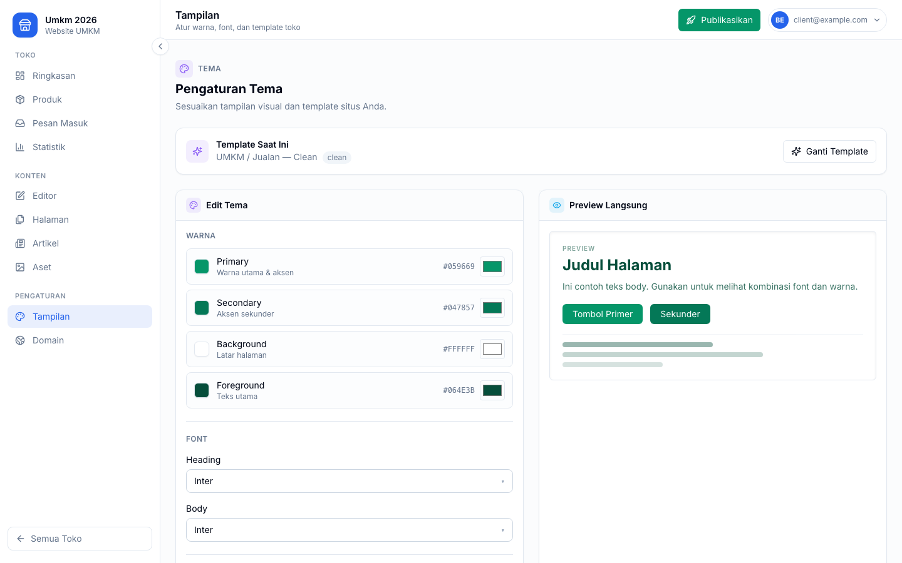
Menu Tampilan — atur warna + font global untuk seluruh situs, atau ganti template.
Global Theme Site (yang di-set di /tema)
│
└──► CSS variables: --color-primary, --color-secondary, dst.
│
└──► Semua block pakai warna ini otomatis
│
│ KECUALI kalau block punya
▼
themeOverride per-block
(override warna khusus block ini)
Kalau block punya themeOverride, ubah global theme tidak affect block itu.
Lihat section "Terapkan Theme ke Semua Block" di bawah.
Kalau block sudah kadung punya warna override sendiri (dari template atau edit manual), ubah theme global tidak affect block itu.
Solusi: klik "Terapkan theme ke semua block" — dialog konfirmasi muncul, klik Ya, reset semua → semua warna block-level di-hapus, block kembali pakai warna theme site.
Perhatikan: - Yang di-reset: warna primary/secondary/bg/fg + background color per block - Yang tidak di-reset: spacing (padding/margin), content block, layout
Klik Ganti Template untuk switch ke template lain: - Theme only — hanya theme (warna + font), block tetap - Append — tambah page baru dari template ke situs existing - Replace all — ⚠️ hapus semua page lama, ganti dengan template baru
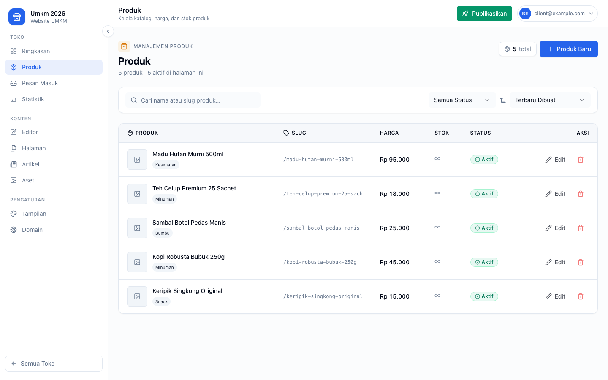
Kalau situs Anda toko:
Pembeli bisa memasukkan beberapa produk ke keranjang lalu memesan sekaligus:
/produk/<slug>)Kelola di menu Pesanan:
Keranjang hanya aktif di situs yang sudah dipublikasikan. Situs hasil export statis tidak punya keranjang (tetap pakai tombol Pesan per produk).
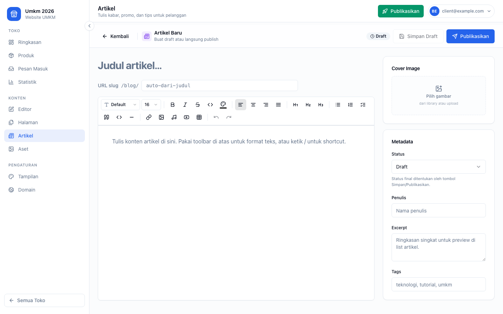
Untuk kabar toko, promo, atau tips seputar produk Anda:
/blog/<slug>Upload gambar + file untuk dipakai di block:
Tab Kode Kustom — inject HTML/JS ke situs (untuk tracking, analytics, dsb.):
</head> (mis. Google Analytics, Meta Pixel)</body> (mis. chat widget, Tawk.to)⚠️ Peringatan: kode kustom tidak di-sanitize — hati-hati XSS. Kalau kamu paste dari sumber tidak dikenal, malicious script bisa jalan di situs.
Setelah edit selesai:
Kalau tombol disabled ("Sudah dipublikasikan") — memang sudah live. Setiap edit di editor otomatis ke draft, tapi baru live setelah klik Publikasikan lagi.
⚠️ Ingat: kalau ubah tema/warna, klik Publikasikan tidak cukup kalau block-nya punya warna override sendiri. Gunakan tombol "Terapkan theme ke semua block" di tab Tema untuk unify.
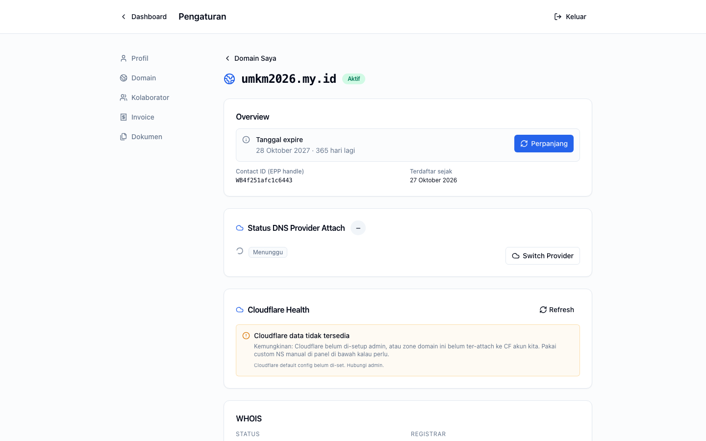
Menu Settings → Domain Saya atau /settings/domains/<domain>:
⚠️ Advanced — kalau ubah NS, situs bisa offline sampai propagasi selesai.
Kalau domain di-manage via Cloudflare (default auto-attach):
Tab Cloudflare Info — diagnostic tools:
Sebagian besar client bayar per-transaksi via gateway. Tapi kalau operator enable wallet untuk semua role:
Saat wizard beli domain, pilih metode Wallet — instan tanpa gateway (potong saldo langsung).
Menu Settings → Tagihan:
Reseller/Agent yang belikan domain untuk Anda otomatis jadi editor di situs Anda. Mereka bisa edit block, tapi tidak bisa hapus situs.
Tab Halaman → Kolaborator di situs:
Untuk register domain .id, PANDI wajibkan KTP/NPWP. Upload sekali, dipakai
untuk semua purchase berikutnya.
Saat wizard step "Konfirmasi", muncul document picker (kalau TLD butuh) — pilih dokumen dari library atau upload baru.
Situs saya tidak buka di browser
- Cek status domain: /settings/domains/<domain> — harus active
- Cek NS sudah point ke Cloudflare (kalau auto-attach on)
- Cek DNS record A @ ada + point ke platform IP
- Tunggu propagasi DNS (max 24 jam pertama kali)
Editor lambat / stuck - Refresh halaman - Clear browser cache - Hindari page dengan block > 50 (split ke sub-page)
Warna theme yang saya save tidak muncul di situs live - Klik tombol "Terapkan theme ke semua block" di tab Tema - Publikasikan situs lagi
Email verifikasi / reset password tidak masuk - Cek Spam - Hubungi support — mungkin config SMTP di sisi platform bermasalah
Domain expired tanpa peringatan - Sistem kirim email reminder 30 hari sebelum expire - Cek Spam folder atau update email di profil
Agent adalah freelancer atau staff dari Reseller yang membantu klien setup situs. Semua transaksi Agent otomatis di-debit dari wallet Reseller induk, bukan wallet pribadi.
Anda tidak bisa daftar Agent sendiri. Reseller induk akan kirim invitation email:
Terima Undangan/agent/dashboard
┌─────────┐
│ Reseller│
└────┬────┘
│ invite
▼
┌─────────┐
│ Anda │ ◄── Login sebagai Agent
│ Agent │
└────┬────┘
│ manage
▼
┌─────────┐ ┌─────────┐
│ Klien │───────►│ Domain │
│(assigned│ │ Situs │
│ ke Anda)│ │(dibeli │
└─────────┘ │ atas │
│ nama │
│ klien) │
└─────────┘
▲
│ debit
│
┌──────────┐
│ Wallet │
│ Reseller │
│ (induk) │
└──────────┘
/agent/dashboard — overview aktivitas Anda:
Menu Klien — /agent/clients:
Menampilkan semua klien yang Anda daftarkan sendiri, ditambah klien yang di-assign ke Anda oleh Reseller induk. Perhatikan:
Tiap baris menampilkan:
| Kolom | Arti |
|---|---|
| Status Akses | Setup = baru didaftarkan · Aktif = sudah siap dikelola |
| Aktivasi | Belum accept = undangan belum diterima, klien belum bisa login · Email belum diverifikasi = sudah bisa login, email saja yang belum dikonfirmasi · Aktif = beres |
| Domain | Jumlah domain aktif milik klien. Kosong (—) berarti belum punya |
Anda boleh mendaftarkan klien sendiri — tidak perlu menunggu Reseller.
1. Buka menu Klien, klik "Tambah Klien"
Tombolnya ada di kanan atas. Kalau Anda belum punya klien sama sekali, tombol yang sama juga muncul di tengah halaman.
2. Isi formulir
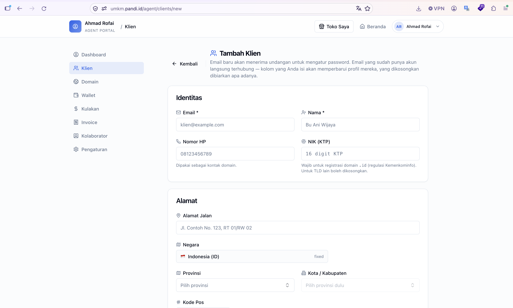
Hanya Email dan Nama yang wajib. Sisanya boleh menyusul.
| Bagian | Isi |
|---|---|
| Alamat email klien. Ke sinilah undangan dikirim | |
| Nama | Nama klien (muncul di email undangan) |
| Nomor HP | Dipakai sebagai kontak domain |
| NIK (KTP) | 16 digit. Wajib untuk domain .id per regulasi Kemenkominfo. Untuk TLD lain boleh kosong |
| Alamat, Provinsi, Kota, Kode Pos | Alamat klien untuk data WHOIS |
Provinsi dan Kota berupa pilihan, bukan ketikan. Pilih Provinsi dulu, daftar Kota akan menyesuaikan. Ini mencegah salah ketik yang membuat pendaftaran domain ditolak registry.
Negara terkunci di Indonesia. Platform ini melayani domain
.idyang mensyaratkan kontak Indonesia.
3. Klik "Tambah Klien"
Yang terjadi berikutnya tergantung apakah emailnya sudah terdaftar:
Ini sering terjadi — misalnya klien pernah mendaftar sendiri sebelumnya.
Kalau klien bilang emailnya tidak masuk:
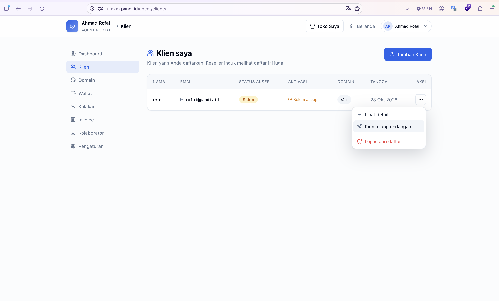
Undangan lama otomatis digantikan yang baru, berlaku 7 hari.
Menu ini hanya muncul untuk klien berstatus "Belum accept". Klien yang sudah bisa login tidak punya undangan untuk diterima — kalau mereka lupa password, arahkan ke Lupa password di halaman login.
Yang terjadi:
| Pesan | Artinya | Yang harus dilakukan |
|---|---|---|
email sudah terdaftar sebagai reseller (atau agent/admin) |
Email itu dipakai akun dengan peran lain | Pakai email berbeda, atau minta orangnya memakai akun pribadi terpisah |
email sudah dikelola oleh manager lain |
Klien sudah jadi asuhan Agent/Reseller lain | Satu klien hanya boleh punya satu pengelola. Koordinasi dengan Reseller induk |
client ini sudah di-assign ke Anda |
Klien tersebut sudah ada di daftar Anda | Cek daftar, mungkin terhalang filter pencarian |
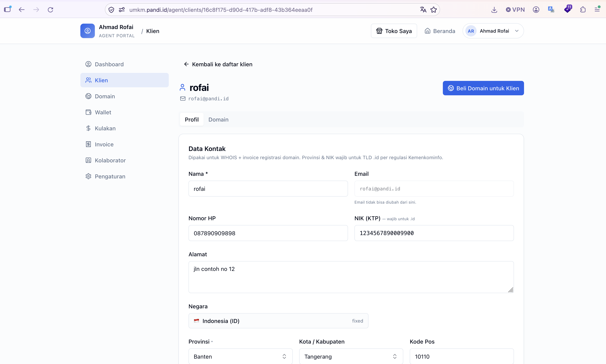
Klik nama klien (atau ⋯ → Lihat detail) → halaman /agent/clients/<id>:
Karena Anda "care of" klien, Anda boleh update profil mereka untuk kelengkapan WHOIS:
.id)Klien tetap bisa update sendiri kapan pun via login mereka.

Flow inti Agent: beli domain untuk klien pakai wallet Reseller induk.
/sites/new-with-domain?for_client=<uuid>pending_provisioning (instant, no gateway)agent_id = AndaAgent tidak punya wallet pribadi. Setiap "bayar" via Wallet = potong saldo wallet Reseller induk.
Kalau wizard tampilkan "Saldo kurang" saat pilih Wallet: - Metode Wallet di-disable - Alternatif: pilih gateway (Midtrans/Paylabs) — bayar sendiri, nanti coordination dengan Reseller - Atau minta Reseller top-up dulu
Menu Wallet Activity — list transaksi yang Anda trigger yang di-debit
dari wallet Reseller induk. Include:
- Domain register untuk klien X: −Rp 250.000
- Domain renew untuk klien Y: −Rp 200.000
Anda tidak bisa top-up wallet — itu tugas Reseller.
Setelah domain klien active + situs dibuat, Anda otomatis jadi editor:
Klien juga bisa edit sendiri — kolaborasi real-time (dengan versi history).
Menu Statistik — /agent/stats:
Menu Purchases — /agent/purchases:
Semua register + renew yang Anda trigger, dengan info: - Nama klien - Nama domain - Tahun - Total - Status (active / pending / failed) - Timestamp
Filter: - Status: all / active / pending / failed - Kind: register / renew
Klik row → link ke halaman detail domain (kalau active) atau pending page (kalau masih proses).
Menu Domain Klien — /agent/domains:
Berbeda dari Purchases (yang transaction log), ini list per FQDN unik — 1 baris per domain, current state: - Nama domain - Klien pemilik - Status - Expire date - Situs terkait (kalau ada)
Cocok untuk monitor "domain klien mana yang mau expire" — filter
expires_at ≤ 30 hari.
Yang BISA Agent lakukan sendiri:
Yang TIDAK BISA (harus lewat Reseller induk):
Kalau butuh salah satu di atas, koordinasi dengan Reseller induk.
Klien saya hilang dari list - Reseller mungkin cabut assignment (revoke). Konfirmasi ke Reseller. - Atau Anda sendiri sempat memilih Lepas dari daftar. Daftarkan ulang dengan email yang sama — akun dan situs klien tidak hilang.
Klien bilang tidak menerima email undangan - Minta cek folder spam dulu - Di daftar klien, klik ⋯ → Kirim ulang undangan - Kalau menu itu tidak ada, berarti klien sudah punya akses login dan memang tidak butuh undangan. Arahkan ke Lupa password di halaman login.
Saya sudah isi alamat dan NIK klien, tapi di halaman detail masih data lama - Ini terjadi kalau email klien sudah terdaftar sebelumnya dan Anda mengosongkan kolom tersebut saat menambahkan. Kolom kosong sengaja tidak menimpa data klien. - Perbaiki lewat halaman detail klien → Edit Profil.
Beli domain gagal — saldo kurang - Cek wallet Reseller di dashboard (menu Wallet — untuk Agent view balance saja, tidak bisa top-up) - Kalau kurang, minta Reseller top-up dulu
Klien butuh edit domain tapi saya tidak lihat opsi Edit Contact
- Fitur ini di-lock ke owner domain (klien) via halaman /settings/domains/<domain>
- Klien harus login sendiri untuk update. Anda cuma bisa edit situs, tidak domain settings.
Situs klien tidak bisa saya edit walau saya sudah beli untuk mereka
- Cek /collaborations — semua situs di mana Anda editor
- Kalau tidak muncul, kemungkinan collaborator entry gagal di-create. Hubungi admin.
Reseller adalah mitra bisnis yang jualan Web Builder ke pelanggan sendiri dengan harga jual sendiri. Reseller punya wallet + tim Agent + list klien.
Reseller wajib approval Admin — tidak bisa langsung aktif setelah daftar.
/reseller/apply atau tombol "Daftar Reseller" di landing page
┌─────────────┐
│ Anda │ ◄── Reseller (approved by Admin)
│ (Reseller) │
└──────┬──────┘
│
┌────┴─────┐
│ │
▼ ▼
┌────────┐ ┌────────┐
│ Agent │ │ Client │ ◄── Direct client (Anda invite)
│ (tim) │ │ │
└───┬────┘ └────────┘
│
│ manage
▼
┌────────┐
│ Client │ ◄── Client via Agent (Agent invite)
│ │
└────────┘
Wallet Anda ──► debit tiap transaksi (self OR via Agent)
/reseller/dashboard:

Menu Klien — /reseller/clients.
Ada 2 cara:
A. Invite via Email (recommended)
B. Create Manual (klien tidak perlu login sendiri)
Kalau Anda 100% take-over — misalnya klien tidak paham komputer:
Klien tetap bisa reset password sendiri via email nanti.
Kolom yang muncul: - Nama, email, phone - Managed by (kalau ada Agent yang assigned) - Status (aktif, belum verify email, suspend) - Total domain - Tanggal join
Filter: role, status, agent (untuk cari klien yang di-manage agent tertentu).
Kalau Anda punya Agent, bisa delegate klien ke mereka:
Agent langsung bisa manage klien itu (beli domain, edit situs).
Klik row assignment → Revoke — Agent lose access ke klien. Klien tetap punya semua data-nya (domain, situs, dst.).
Klik row → /reseller/clients/<id>:
Tabs: - Profil — full info klien - Domain — list domain klien - Situs — list situs klien + link editor (Anda otomatis editor) - Invoice — riwayat transaksi klien - Aksi: - Beli Domain untuk klien - Edit profil klien

Menu Tim atau Agent — /reseller/team atau /reseller/agents.
Klik row Agent → /reseller/team/<agent_id>:
Klik row → Suspend / Delete: - Suspend: Agent tidak bisa login, tapi data historis + assignment tetap - Delete: hapus permanent, assignment ke klien juga di-clear

Menu Wallet — /reseller/wallet.
Card besar di top: saldo current dalam Rupiah.
Halaman top-up detail: 1. Klik row top-up dengan status awaiting verification 2. Klik Upload Bukti 3. Pilih file (JPG/PNG/PDF, max 8 MB) 4. Optional: tambah catatan 5. Submit → status jadi awaiting_verification, admin dapat notif 6. Setelah admin approve → saldo credit + ledger entry
Tab Ledger di halaman Wallet: - Semua credit + debit dengan timestamp - Link ke invoice untuk debit (mis. domain register) - Filter tanggal, tipe (credit/debit)
Tab Per-Agent Activity: - Aggregate spending per Agent Anda dalam periode - Cocok untuk track "Agent mana yang paling produktif" atau komisi kalkulasi - Export ke CSV

Ini yang bikin Reseller = bisnis. Anda set markup dari harga wholesale platform.
Harga Platform Anda Set (per TLD)
────────────── ──────────────────
Retail Rp 250.000 ← baseline harga client
Wholesale Rp 180.000 ← Anda bayar segini per register
─► Agent Price: Rp 200.000 (Anda tetapkan)
└─ Ini yang di-debit dari wallet saat Agent Anda beli
─► Client Price: Rp 240.000 (Anda tetapkan)
└─ Ini yang dilihat + dibayar client saat beli sendiri
Margin Anda per transaksi: Wholesale − Client Price untuk client
self-purchase, atau Wholesale − Agent Price kalau Agent beli untuk client.
Menu Harga Jual — /reseller/pricing:
Tab list menampilkan: - Semua TLD yang sudah Anda set - Kolom: agent_reg, agent_renew, client_reg, client_renew, wholesale (reference)
Sama flow dengan Agent. Beda: transaksi di-log dengan purchased_by = Anda
(bukan agent_id), wallet yang dipotong = wallet Anda sendiri.
/sites/new-with-domain?for_client=<uuid>Menu Purchases — /reseller/purchases:
Semua transaksi yang trigger via tim Anda (self + Agent): - Kolom: klien, domain, status, kind, total, tanggal - Filter: status, kind, klien - Export CSV — untuk akuntansi
Menu Tagihan — /reseller/invoices:
Aggregate list: - Invoice self (top-up wallet Anda) - Invoice klien (register + renew untuk mereka) - Klik row → detail + PDF download
Menu Statistik — /reseller/stats:
Menu Domain — /reseller/domains:
Beda dari Purchases (yang transaction log), ini list per FQDN unik: - 1 baris per domain - Info: owner klien, status, expire, situs terkait, siapa yang trigger register
Filter berguna:
- expires_at ≤ 30 hari — domain yang mau expire, follow-up ke klien untuk renew
Menu Kolaborasi — /settings/collaborators:
Reseller otomatis editor di semua situs klien yang Anda + Agent Anda buat.
Yang TIDAK bisa Reseller lakukan:
/admin/* (akses admin platform)1. Set harga jual DULU sebelum invite Agent
Kalau Agent Anda beli domain sebelum Anda set harga TLD tersebut, sistem fallback ke retail platform — Anda tidak dapat margin.
2. Top-up wallet cukup
Kalau saldo habis di tengah transaksi Agent, mereka blocked. Kalau bisnis aktif, top-up 2x lipat rata-rata transaksi bulanan supaya tidak sering top-up.
3. Monitor Agent Breakdown
Cek berkala menu Wallet → Agents Breakdown untuk deteksi: - Agent yang tidak aktif (0 transaksi) — mungkin butuh training - Agent yang salah beli (mis. domain expensive tanpa persetujuan) - Untuk hitung komisi
4. Test flow sebagai Client dulu
Sebelum onboard klien beneran, coba self-purchase dari akun test → alami sendiri flow-nya → bisa jelaskan ke klien saat mereka bingung.
Aplikasi reseller saya masih pending 2 hari - Hubungi admin — biasanya approve 1x24 jam kerja
Agent invitation email tidak terkirim ke Agent - Cek Spam folder Agent - Cek Anda tidak salah tulis email di form invite - Re-send: klik row Agent (status pending) → Kirim Ulang
Wallet debit tidak sesuai — Agent beli tapi saldo saya tidak turun - Kemungkinan transaksi di-cancel / failed di provisioning stage — wallet auto-refund - Cek ledger, kalau ada baris "refund", itu sudah dikembalikan
Klien tidak bisa akses situs setelah saya belikan
- Cek domain status: sudah active?
- Cek Cloudflare attach: sudah success? (info di /settings/domains/<domain>
tab Cloudflare)
- Kalau CF attach failed, ada tombol Retry di admin — hubungi admin
Set harga tapi client masih lihat harga retail
- Cek TLD yang Anda set match dengan TLD yang client cari — mis. set id
tapi client cari co.id = beda TLD
- Refresh cache: logout-login client lagi (kadang wizard cache pricing)
Berapa margin saya per domain?
- Buka /reseller/pricing — kolom margin visible sebagai client_price − wholesale
untuk client self, atau agent_price − wholesale untuk transaksi via Agent
Admin adalah operator platform. Punya akses full ke semua data + config sistem. Panduan ini asumsi Anda familiar dengan cara kerja SaaS multi-tenant + registrar domain.
Admin akun harus di-bootstrap via env var (ADMIN_EMAIL + ADMIN_PASSWORD
di .env API) saat pertama deploy. Setelah itu, admin bisa promote user lain
via panel.
Login → tombol ⚙ Admin Panel muncul di header dashboard (kalau role
Anda admin). Klik → redirect ke /admin.

┌───────────────┐
│ ADMIN │
│ (Anda, ops) │
└───────┬───────┘
│
│ approve / manage
▼
┌──────────────────┼──────────────────┐
│ │ │
▼ ▼ ▼
┌─────────┐ ┌─────────┐ ┌─────────┐
│Reseller │ │ Agent │ │ Client │
│(mitra) │───────►│ (staff │───────►│ (end │
│ │ │ tim R) │ │ user) │
└────┬────┘ └─────────┘ └─────────┘
│ ▲
└─────────────────────────────────────┘
Reseller/Agent bisa OBO (on-behalf-of)
/admin — dashboard stats:
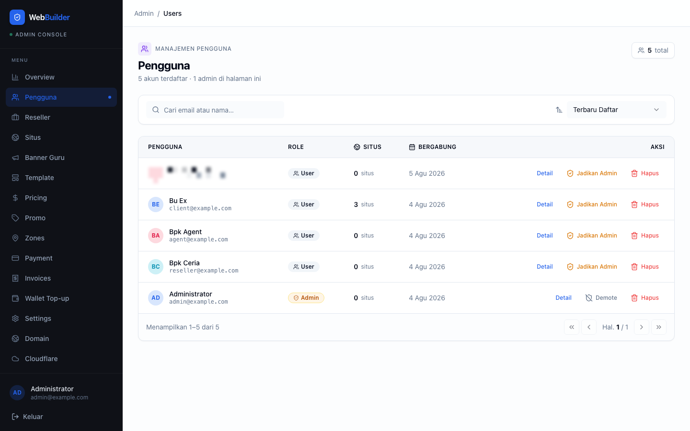
Menu User — /admin/users.
Kolom: email, nama, role, status verify, tanggal daftar, total situs.
Filter: role, status, search (email/nama).
Klik row → tab: - Profil — full info - Situs — list situs user - Invoice — riwayat transaksi - Aksi: - Ganti Role — promote/demote (client ↔ reseller ↔ agent ↔ admin) - Reset Password — kirim email reset - Suspend — user tidak bisa login (data tetap) - Delete — cascade hapus user + semua data (ireversibel!)
Hati-hati — admin punya akses full. Best practice: 1. Sebelum promote, konfirmasi via WA/email personal 2. Enable 2FA di akun mereka (belum ada, roadmap) 3. Log siapa promote siapa kapan (audit log auto-record)
Menu Situs — /admin/sites.
Semua situs cross-user. Filter: owner, status (published/draft), search.
Klik row → Edit Quota: - Max pages — default 20 - Max storage — default 100 MB
Kalau ada user komplain quota habis, cek usage-nya dulu di /sites/<id>/usage
sebelum naikin (mungkin ada spam upload).
Delete — cascade hapus situs + pages + assets + domain link. Ireversibel. Konfirm ownership + reason sebelum delete.

Menu Reseller — /admin/resellers.
Kolom: nama, email, reseller display name, tanggal apply, status.
Filter status: pending / approved / suspended.
Klik row → info: - Data pribadi + bisnis - Alamat + phone - Reason for apply (kalau ada field)
Approve:
1. Klik row → tombol Approve
2. Backend: role user diupgrade ke reseller + email notif dikirim
3. Status jadi active
Suspend: 1. Untuk reseller aktif — freeze akses tanpa hapus data 2. Isi reason (untuk audit + email ke reseller) 3. Klik Suspend 4. Reseller tidak bisa login, tapi klien + Agent + data tetap
Unsuspend: klik lagi → Reactivate.
Menu Domain — /admin/domain.
Aggregate list per FQDN (cross-user). Cocok untuk monitor semua domain di platform.
Filter: - Status: active / expired / suspended - Expiring: dalam N hari - Search: domain name / owner email
Klik row → /admin/domain/<name>:
- Info domain (bypass ownership check)
- WHOIS live
- Nameservers
- DNS records (via Cloudflare)
- Cloudflare attach status — kalau failed, tombol Retry available
Kalau cf_attach_status = failed:
1. Klik tombol Retry di card CF status
2. Backend re-run tryAttachToCloudflare
3. Kalau sukses: badge jadi Terhubung (hijau)
4. Kalau tetap fail: cek error detail — biasanya:
- Token CF invalid → update di /admin/cloudflare
- Zone sudah exist di akun lain → hapus dulu di CF dashboard
- Permission tidak cukup → cek token permission (butuh Account → Zone → Edit)
Menu Registrar atau Purchases — /admin/domain/purchases.
Transaction log semua register + renew cross-user. Termasuk yang failed.
Klik row → kalau status failed / pending_payment / pending_provisioning:
- Tombol Retry di kolom Aksi
- Bypass ownership — admin bisa retry job siapa pun
- Idempotent — kalau job sudah active, no-op
Menu Harga Platform — /admin/pricing/platform.
Set harga baseline per TLD × periode. Ini yang di-refer Reseller saat set markup mereka.
Untuk 1 TLD × N tahun:
Retail Price — yang client bayar (tanpa reseller)
Wholesale Price — cost basis (yang direseller bayar ke Anda)
Cost Price — biaya Anda ke registrar (untuk kalkulasi margin platform)
Contoh .id 1 tahun:
- Cost: Rp 150.000 (biaya ke PANDI)
- Wholesale: Rp 180.000 (dijual ke reseller — margin Anda Rp 30.000)
- Retail: Rp 250.000 (client self-purchase — margin Anda Rp 100.000)
/admin/zones)Kalau TLD di zones tapi tidak ada di pricing, wizard beli domain tampilkan "harga belum di-set" — client tidak bisa beli TLD itu.
Menu Promo — /admin/promos.
LAUNCH2026 (uppercase auto)Detail promo → tab Redemption: - List semua penggunaan dengan user, invoice, tanggal - Unique per invoice (cegah dobel redeem)
Bisa Pause promo tanpa hapus (redemption history tetap):
- Set status paused → tidak available di wizard walau valid window
Menu Zone — /admin/zones.
Kontrol TLD apa yang platform Anda support.
id, co.id, com.id, .co.id).id family).com, .net)Menu Settings — /admin/settings.
Key-value store untuk config non-code:
- PPN rate — mis. 0.11 (11%)
- Brand name — untuk PDF invoice + email
- Brand address — di footer email + PDF
- Support email — kontak yang muncul di UI
- Support phone
- Dan config lain sesuai domain bisnis
Edit inline, save langsung apply.
Menu Payment Method — /admin/payment-methods.
CRUD gateway pembayaran + config credentials.
Contoh Midtrans:
1. + Payment Method
2. Isi:
- Code: midtrans_snap
- Label: Midtrans (Snap)
- Type: gateway
- Enabled: true
- Config JSON:
json
{
"server_key": "SB-Mid-server-XXX",
"client_key": "SB-Mid-client-XXX",
"snap_url": "https://app.sandbox.midtrans.com/snap/v2/vtweb",
"webhook_secret": "..."
}
3. Simpan
4. Wizard beli domain langsung tampilkan opsi ini
manual_bank, type: manualjson
{
"banks": [
{"name":"BCA", "account_number":"1234567890", "account_holder":"PT Web Builder"}
],
"instructions_md": "Setelah transfer, tunggu 1x24 jam."
}Uncheck Enabled → tidak muncul di wizard, tapi transaksi lama tetap history. Cocok untuk sunset gateway.

Menu Invoice — /admin/invoices.
Filter: status (draft/unpaid/paid/cancelled/expired), search.
Untuk manual_bank flow — setelah verify transfer di bank statement:
unpaid)ExecuteAfterPayment (register domain / credit wallet)Untuk invoice unpaid yang expired atau salah:
1. Klik Batalkan
2. Isi reason (untuk audit)
3. Konfirm → status → cancelled, refund gateway (kalau applicable)
Setiap invoice → tombol PDF — generate HTML print-friendly, browser bisa Save As PDF.
Note: PDF real belum di-render (masih HTML). Kalau butuh true PDF, install wkhtmltopdf atau chromium-headless di server + swap renderer.
Menu Wallet Top-up — /admin/wallet/topups.
Filter status awaiting_verification — top-up manual_bank yang user sudah
upload bukti.
failed, email ke user dengan reasonTab Wallet Adjust — untuk case khusus (refund, koreksi bug):

Menu Cloudflare — /admin/cloudflare.
Multi-account support — bisa punya beberapa CF config, salah satu di-tag default.
webbuilder-prod/user/tokens/verify atau /accounts/{id}/tokens/verifyToggle bintang di row config → jadi default untuk auto-attach domain baru.
Menu Template — /admin/templates.
Semua template (built-in seed + custom yang admin buat).
Filter: status (draft/published/archived), category.
Kalau mau bikin variant dari template existing → Duplicate → rename + modify.
Menu Audit Log — /admin/audit-log.
Semua action penting yang admin lakukan: - Reseller approve/suspend - Invoice mark-paid - User promote/demote - Delete site/user - Promo apply - Domain retry
Filter: event, actor (siapa yang do), target (siapa yang kena), tanggal.
Untuk compliance + forensic kalau ada dispute.
Menu Email Log — /admin/email-log.
List semua email yang dikirim sistem (verification, reset password, invitation, domain expiry, top-up approved, dsb.).
Filter: kind, to (email penerima).
Kalau user komplain "tidak terima email X":
1. Cek email log — status sent / failed?
2. Kalau sent tapi user tidak dapat: cek Spam folder mereka
3. Kalau failed: cek SMTP config di .env API
/metrics — Prometheus scrape endpoint (tidak di UI admin, akses via curl atau Grafana).
Counter penting:
- domain_purchase_created_total{result,gateway} — success rate purchase
- payment_webhooks_total{code,result} — webhook health per gateway
- cloudflare_attach_total{result} — CF attach success rate
- domain_expiry_notices_total{result} — email reminder health
Setup Grafana dashboard untuk trend visualization.
1. Backup DB rutin
registered_domains, sites, invoices = data authoritative. Backup harian
minimum, PITR (Point-in-Time Recovery) kalau volume tinggi.
2. Monitor 502 di api-registry
Kalau EPP session drop, api-registry sering 502. Cek log
pm2 logs api-registry | grep 502. Fix: set EPP_PER_COMMAND_SESSION=true
di .env api-registry (trade latency vs stability).
3. Verify Cloudflare token expire policy
Kalau token TTL bukan Forever, set reminder untuk rotate sebelum expire.
Kalau expire, auto-attach domain baru bakal fail.
4. Update system_settings PPN rate rutin
Kalau ada perubahan regulasi PPN, update via /admin/settings/ppn_rate.
Invoice yang sudah issued tetap pakai rate saat itu, invoice baru pakai rate baru.
5. Cek expired domain queue
Menu Domain filter expires_at ≤ 7 hari — kirim reminder manual ke user
kalau email otomatis tidak jalan.
API service crash / restart-loop
- Cek log: pm2 logs api --lines 200
- Kemungkinan: DB migration failed, credential invalid, config validation error
- Fix root cause di .env atau code, restart
Semua request 502 dari Caddy
- Cek API service jalan: pm2 status
- Cek port match: .env HTTP_ADDR vs Caddyfile reverse_proxy
- Cek firewall antara Caddy ↔ API (kalau beda server)
Domain aktif tapi tidak resolve di browser
- Cek Cloudflare attach status di /admin/domain/<name>
- Cek DNS record A @ point ke platform IP
- Test propagation: dig <domain> +short @1.1.1.1
Invoice paid tapi domain tidak provision
- Cek pm2 logs api | grep ExecuteAfterPayment
- Manual retry: /admin/domain/purchases → cari job → tombol Retry
User tidak dapat email verifikasi
- Cek /admin/email-log filter user tersebut
- Cek SMTP config di .env API — mungkin kredensial expired atau rate-limited
Reseller apply spam / abuse
- Reject applications yang tidak masuk akal
- Kalau signup rate abnormal, tambah rate limit di /api/v1/auth/reseller/apply
(config di code, butuh redeploy)